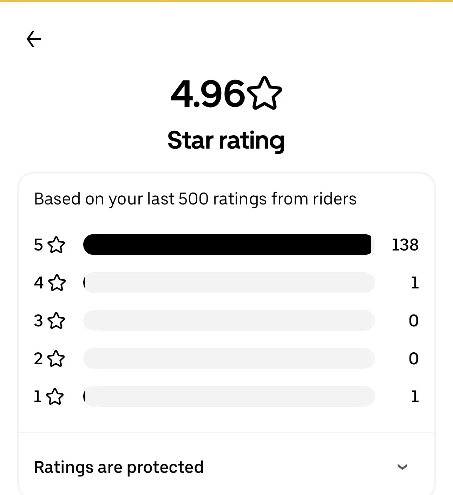
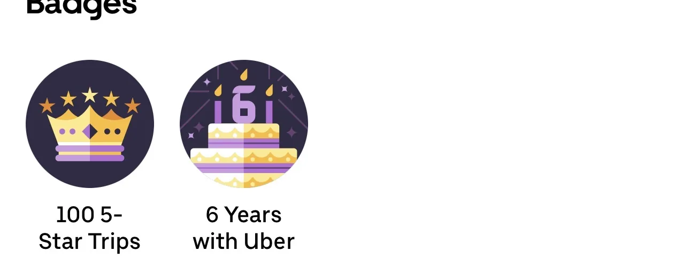
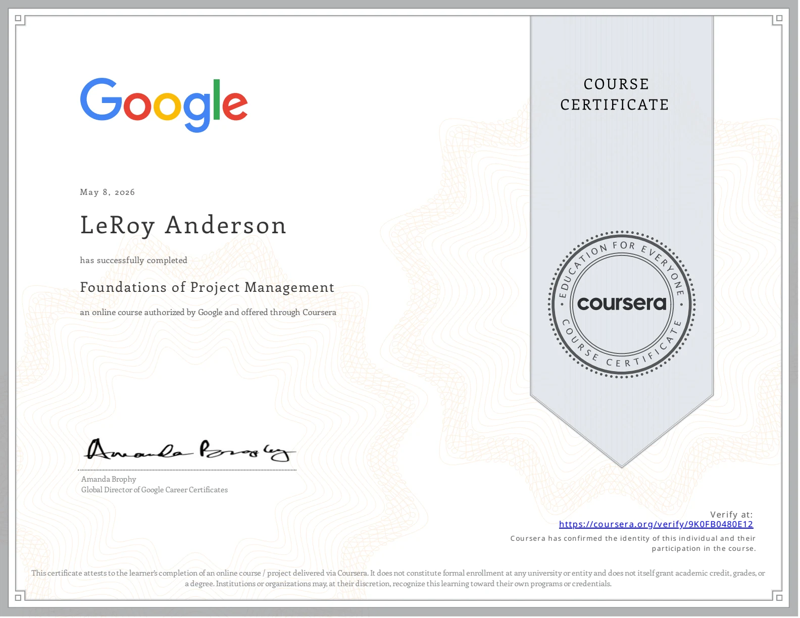
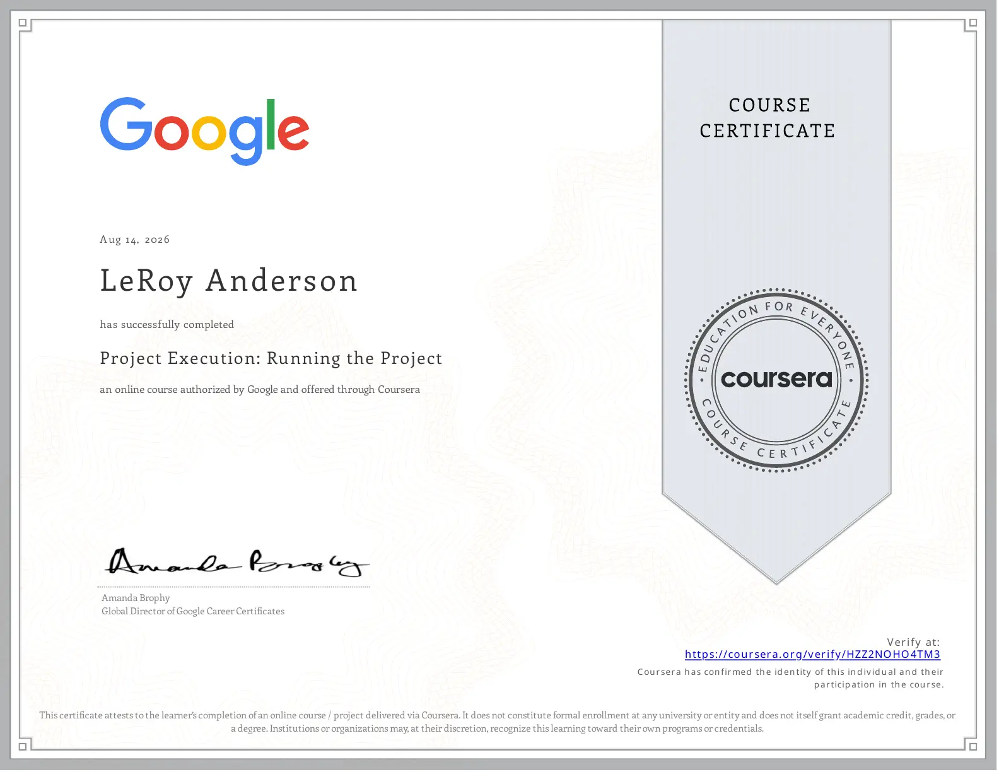
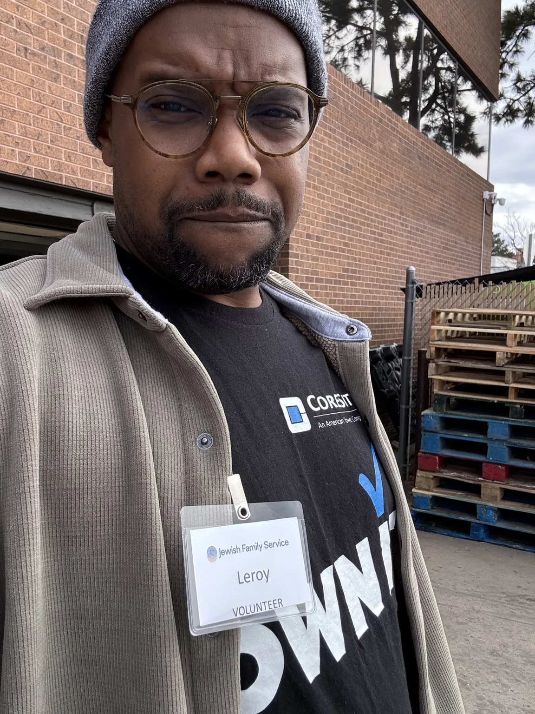

LeRoy Anderson
Customer Success and Service Delivery professional helping technology customers feel supported, informed, and confident through clear communication, reliable follow-through, and trusted relationship management.

Career highlights at a glance
My strongest pattern is customer-first execution: solving service issues, keeping people informed, coordinating the right next step, and building trust through consistent follow-through.
Customer success, account support, and service delivery
I bring experience across data centers, telecommunications, consumer technology, account management, and small business ownership. The throughline is simple: listen carefully, communicate clearly, coordinate the right next step, and follow through.
Outside of my professional roles, I’m also a business owner, pet care provider, volunteer, and relationship-builder. I believe strong service comes from being reliable, transparent, and genuinely invested in people.
Customer success and service delivery experience in data center and technology environments
Telecommunications and account management background through Comcast and AT&T
Recognized contributor to strong customer satisfaction and NPS performance
Completed Google project management coursework through Coursera
Small business owner of BigPetLittlePet
Volunteer with Jewish Family Service and local community cleanup efforts
How I help customers feel taken care of
Strong service is not just solving the issue. It is lowering stress, keeping people informed, and making the next step feel clear.
Clear communication
I translate needs, next steps, and expectations into language customers can trust.
That includes timely updates, careful listening, simple explanations, and making sure people know what is happening before they have to ask.
Reliable follow-through
I stay with the details until the customer has an answer, a path forward, or a real handoff.
My work style is steady: track the issue, close the loop, document what matters, and keep the customer experience consistent.
Calm problem solving
I bring patience and structure into moments where customers may feel confused or frustrated.
I like getting to the root of what someone needs, coordinating with the right people, and turning unclear situations into manageable steps.
Friendly ownership
I care about the relationship, not just the transaction.
Whether I am supporting a technology customer, helping a pet-care client, or volunteering locally, I try to leave people feeling respected, seen, and supported.
Recognized for customer-first service, performance, and follow-through
Recognition from CoreSite and Apple highlights my customer-centric approach, responsiveness, portal support, communication, sales performance, and ability to deliver strong experiences across multiple customer-facing environments. Internal/customer details are summarized without customer names, company names, case numbers, or confidential identifiers.
Customer-Centric Service
Recognized for helping a customer directly navigate a portal access issue while maintaining strong service across multiple communication channels.
NPS & Survey Feedback
Received recognition tied to “Very Satisfied” survey feedback and perfect NPS feedback for onboarding-related portal assistance.
Responsive Support
Acknowledged for responsiveness, communication, time to resolution, and creating a customer experience that reflected positively on the brand.
Leadership Recognition
Recognized by leadership for quickly becoming a valuable contributor, leaning in, learning fast, and bringing a customer-focused approach to the team.
Apple Circle of Excellence
Earned Apple Circle of Excellence recognition in 2023, reflecting strong customer engagement, teamwork, and performance in a high-volume technology retail environment.
Consistent Performance
Received Exceeding Expectations performance ratings in consecutive yearly reviews, demonstrating reliable execution, customer focus, and continued professional growth.
“Recognized for customer-centric service, strong customer satisfaction feedback, Apple Circle of Excellence achievement, and consistent performance across customer-facing roles.”
Consistent service, proven by real customer feedback
Across service-based work, my customer feedback reflects the same themes: communication, care, friendliness, efficiency, and dependability.

Uber Star Rating
4.96 rating based on recent rider feedback.

Service Badges
100 five-star trips and six years with Uber.
Customer Compliments
Recognized for friendly service, care, great communication, and quick, efficient support.
Verified Rover review
Client name and profile image removed for privacy.
“This was my first time using Rover, and LeRoy made me feel so comfortable leaving my baby with him while I was out of town. He sent lots of videos and pictures, followed the care instructions we gave him, and I would recommend LeRoy to anyone that needs a sitter.”
“Very communicative throughout the stay.”
Communication“Incredible experience.”
Client experience“Helpful, flexible, and communicative.”
Flexibility“Sent photos every day.”
Trust-building updatesGoogle project management coursework
I completed four Google project management courses through Coursera, building formal exposure to project life cycles, initiation, stakeholder analysis, project charters, Agile concepts, Waterfall methodology, change management, project planning, quality management, team leadership, and project execution.

Foundations of Project Management
Completed May 8, 2026 • Authorized by Google
Project Initiation: Starting a Successful Project
Completed May 24, 2026 • Authorized by Google
Project Planning: Putting It All Together
Completed June 25, 2026 • Authorized by Google

Project Execution: Running the Project
Completed August 14, 2026 • Authorized by Google
BigPetLittlePet
BigPetLittlePet represents my entrepreneurial side and my commitment to trust-based service. Through pet care, dog walking, boarding support, and personalized client relationships, I’ve built repeat business by being dependable, communicative, and consistent.
My Rover profile reflects that same approach: strong reviews, repeat clients, fast response times, photo updates, and client feedback centered on communication, flexibility, and care.
4.9 out of 5 stars across 96 Rover reviews
35 repeat pet parents and a 100% response rate
100% of bookings include photo updates
Experience caring for senior dogs, special-needs dogs, and pets requiring medication
Showing up beyond the workplace
Service has always been part of how I show up — professionally and personally. I volunteer with Jewish Family Service and community cleanup efforts because I believe in being connected to the people and neighborhoods around me. That same mindset carries into my work: be reliable, communicate clearly, follow through, and leave things better than you found them.

Open to the right opportunity
I’m focused on opportunities in Customer Success, Account Management, Service Delivery, Project Coordination, and technology-focused client support roles.